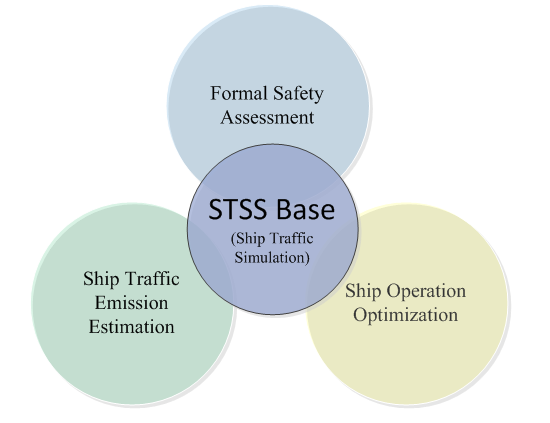

STSS is a ship traffic simulation and analysis system developed by Prof. Qiang Meng in the Department of Civil and Environmental Engineering in National University of Singapore (NUS) and Dr. Zhang Liye who worked as a research fellow in the Centre for Maritime Studies (CMS) of NUS and is now a research scientist in IHPC of A*Star.
STSS aims to integrate the concrete methodologies/models that have been developed or will be proposed by Prof. Meng’s research group, including multi-agent based ship traffic simulation, formal safety assessment, ship traffic emission estimation as well as ship operation optimization. The functional architecture of STSS is illustrated as follows:
The formal safety assessment module will comprise three quantitative risk assessment models using real or simulated AIS data, including the dynamic ship domain based ship collision and contact models, and ship grounding model. These models fully benefit from the recent advance of complex system simulation and big data technologies.
STSS offers flexibility in several aspects: (a) ship routes can be inputted from GUI manually or extracted from historical data automatically, (b) OD ship traffic demand can be estimated and analyzed automatically using historical AIS data or input by users, (c) all types of ships can be simulated based on user definition, (d) the navigational behaviors are formulated by the data-driven models and calibrated by the advanced optimization techniques based on big AIS data.
The demo video of STSS v0.1 can be found on [ Youtube (Demo of STSS v0.1)]. The latest version is 0.6 and supports the plugin function.
STSS is currently still under development and is not open source at this stage. For more information about STSS, please contact Prof. Meng.